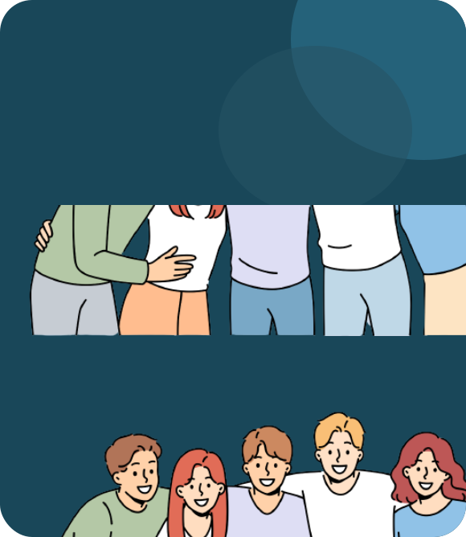

Welcome to Campus Connected
This project “Campus Connected” is the work of “
Parth Singh, Syed Atif Hussain,Shreya Upadhyay, Ankur Patra, Asmi
Walia
”.The core features of the website include user registration and
authentication, allowing students to create unique accounts with
personalized usernames. Upon registration, users can input their
class schedules, specifying subjects and time slots. The website
fosters social connections through a friendship management system,
enabling users to send and accept friend requests by searching for
other users via their usernames. Real-time location tracking
leverages users' timetables to determine their current locations,
helping friends keep tabs on one another. The website also provides
a platform for students to view and manage their exam schedules, and
to maintain to-do lists to stay organized